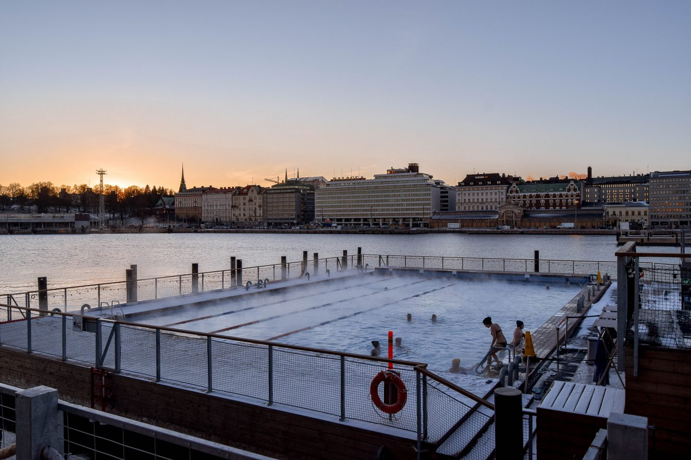
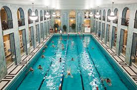
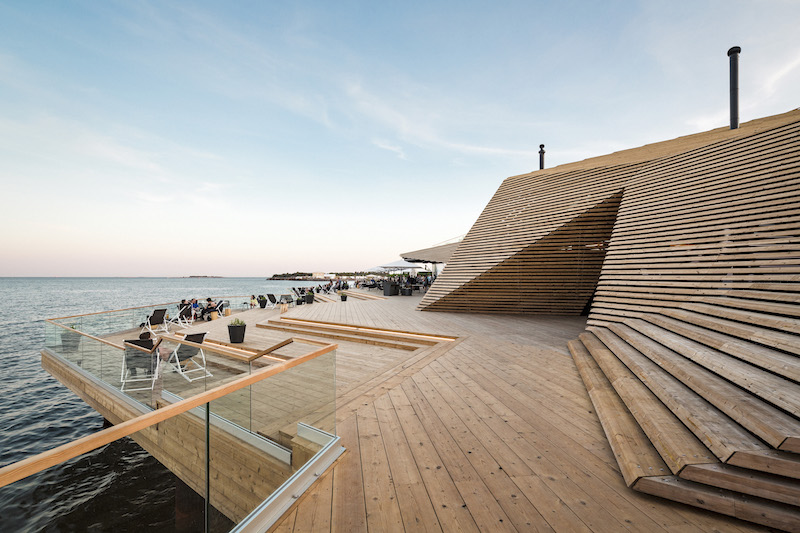
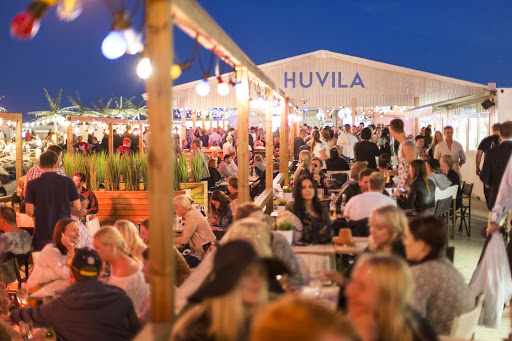
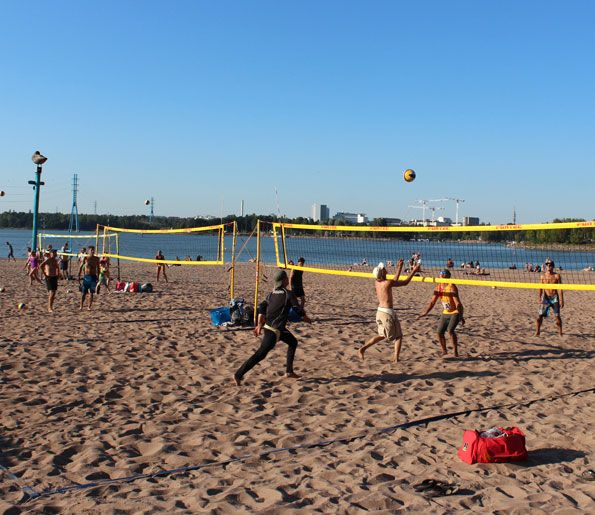
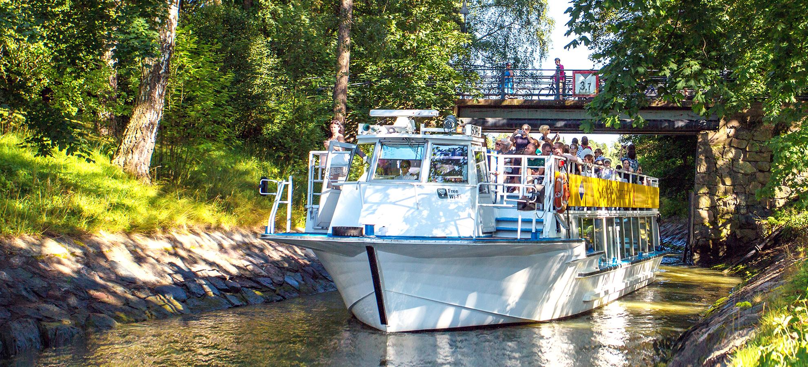
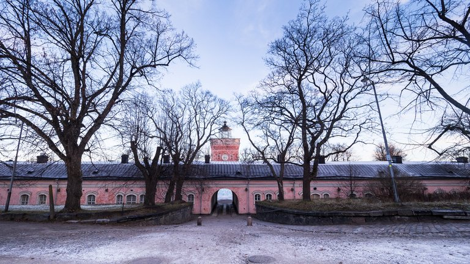
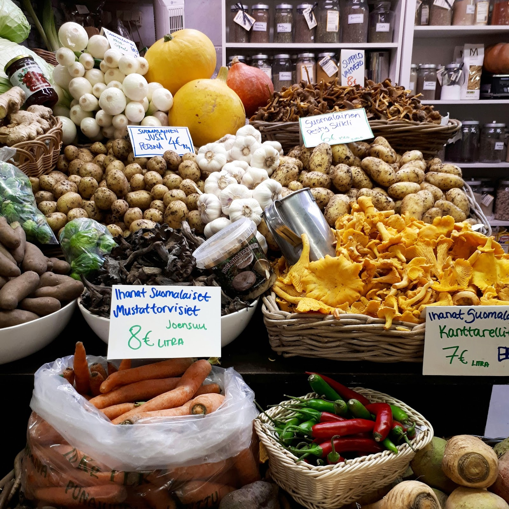

Aktiviteetit
Jos etsit kaupunkilomaltasi kahviloiden ja ravintoloiden lisäksi uusia kokemuksia, Helsinki on juuri oikea paikka sinulle.
Kaupunkia pääset kesäaikaan kiertelemään helposti vuokrattavilla kaupunkipyörillä tai sähköpotkulaudoilla edullisesti.
Pääset myös helposti vesille ihailemaan Helsingin edustan saaristoa ja esimerkiksi tutkimaan historiallista Suomenlinnaa.
Allas Sea Pool
"Allas Sea Pool on helsinkiläinen merikylpylä ja hyvinvointikeidas joka pyörii täysin uusiutuvalla energialla. Meillä voit uida, saunoa, treenata sekä syödä ja juoda hyvin."
Katso täältä lisää!Yrjönkadun uimahalli
"Yrjönkadun uimahalli vihittiin käyttöön 4.6.1928. Se oli vuosikymmeniä Suomen ainoa julkisessa käytössä ollut uimahalli. Halli on rakennustaiteellisesti arvokas, aikansa klassismin edustava esimerkki. "
Katso täältä lisää!Löyly
"Löyly, Helsinki | Pala kaunista Helsingin rantaviivaa, tarjoaa upeita elämyksiä ja lämpimiä hetkiä niin kaupunkilaisille kuin matkailijoille kotimaasta ja merten takaa."
Katso täältä lisää!Hernesaarenranta
"Hernesaaren Ranta on tapahtumakeskus meren äärellä hyvien kulkuyhteyksien päässä. Tarjolla on upeita keikkoja ja erilaisia mielenkiintoisia tapahtumia."
Katso täältä lisää!Hietaniemen uimaranta
"Hietaniemen matala hiekkaranta (Hietsu) vetää puoleensa etenkin helteillä, jolloin ranta täyttyy auringonpalvojista. Löhöilyn lisäksi rannassa on mahdollisuus pelata rantalentopalloa ja koripalloa. "
Katso täältä lisää!Saaristoristeily
"Tutustu Helsinkiin pintaa syvemmältä! Royal Linen sightseeing-reiteillä näet kauneimmat maisemat, kaikki tärkeimmät nähtävyydet ja kuulet mielenkiintoisia tarinoita. "
Katso täältä lisää!Suomenlinna
"Unescon maailmanperintökohde Suomenlinna on kulttuuriaarre, jonka rakentaminen alkoi 1700-luvun puolivälissä Suomen kuuluessa Ruotsiin."
Katso täältä lisää!Korkeasaari

"Korkeasaaren eläintarha perustettiin vuonna 1889 opiksi ja valistukseksi, jotta kansanpuistossa olisi ylentävää ajanvietettä. Nykyään Korkeasaaressa voit tutustua noin 150 eläinlajiin tundralta trooppisiin sademetsiin ja aavikoihin."
Katso täältä lisää!Linnanmäki

"Linnanmäki on Suomen vanhin ja suosituin huvipuisto, joka sijaitsee Helsingin Alppilassa. Linnanmäellä on yli 40 huvipuistolaitetta, runsaasti erilaisia pelejä sekä ravintoloita ja kahviloita. Huvipuiston suosituin laite on puinen vuoristorata, joka on ilahduttanut huvittelijoita jo vuodesta 1951 alkaen."
Katso täältä lisää!Hakaniemen kauppahalli
"Hakaniemen kauppahallin peruskorjaus alkoi vuoden 2018 alussa ja valmistuu näillä näkymin vuonna 2020. Peruskorjauksen aikana hallin toiminta jatkuu keskeytymättä väliaikaisissa tiloissa, Lasihallissa, Hakaniemen torilla."
Katso täältä lisää!